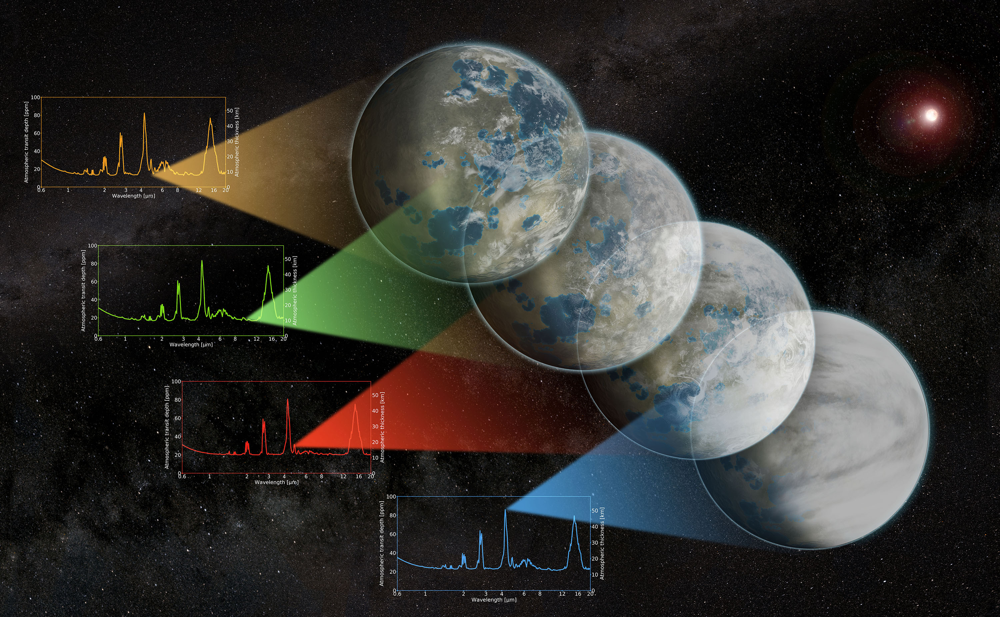

Exoplanet model intercomparison projects

Exoplanet models are complex pieces of software that often require significant computational resources. I collaborate with researchers around the world to systematically compare and benchmark different models, with the ultimate goal to get more robust and reproducible modelling results. This is done via so-called model intercomparison projects (MIPs). While there is a long history of MIPs in the Earth climate community, a more organised effort to do this for exoplanets has begun thanks to CUISINES, an international model intercomparison framework. The pilot project of CUISINES was the TRAPPIST-1 Habitable Atmosphere Intercomparison (THAI), which focused on scenarios for a potentially habitable climate on an Earth-size exoplanet TRAPPIST-1e, a primary target for atmospheric characterisation. THAI resulted in three major publications: (1) ‘dry planet’ simulations1, (2) ‘aqua-planet’ simulations2 and (3) atmosphere detectability3. Following the TRAPPIST-1 Habitable Atmosphere Intercomparison workshop in 2020, we published a review4 of exoplanet climate models and parameterizations of the atmospheric processes on terrestrial exoplanets, with a discussion on the recent model advancements and limitations, as well as directions for future model development.
Since THAI, ten more exoplanet MIPs for a variety of model types and exoplanet targets have started. I am contributing to several CUISINES MIPs such as those for 3D sub-Neptune climate models5, 1D radiative transfer models6, 3D hot Jupiter climate models and others. Together with Thomas Fauchez at NASA, I am a co-chair of CUISINES (since 2024).